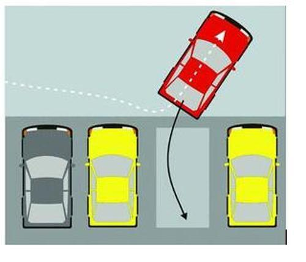
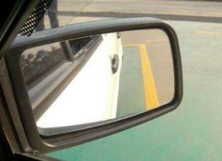

网上右入库方法，基本都是先后退到一定位置，然后右打死，到一定位置后回盘，等后轮入库后再打死。个人感觉这方法不够好，原因是要执行的操作，需要看的点位太多。 而且最大的问题就是如果第一把打晚了，基本就是必死的局面。 特别是考试的时候，心情紧张就特别容易犯错。

我们教练教的右入库方法，是车轮压前感应线后， 马上原地打一圈90度， 然后开始倒车。 等后轮入库后，直接打死即可。 中间不需要回盘。 使用这种方法，如果发现偏窄偏宽， 都有相当大的调整余地。
